Session 1: Methods for the coursework report
Discussion
1 Welcome and Section A review
⏱ 20 min
The assignment in one slide, frequency tables, descriptives and normality
Acquisition
2 Comparing two groups
⏱ 70 min
Independent samples t-test, Levene’s test, Cohen’s d, APA reporting
Practice
3 Measuring a relationship
⏱ 35 min
Pearson’s r, R², the scatterplot and the causation caution
Investigation
4 Porter’s Five Forces
⏱ 35 min
Force scores, strategic responses and the live FlairMI tools
Assessment
5 Putting the report together
⏱ 10 min
Report structure, appendices, the AI declaration and a recap
Today’s focus
| Time | Topic | Report section | Marks |
|---|---|---|---|
| 0:00 | Describing the sample (review) | A | 15 |
| 0:20 | Comparing two groups | B | 20 |
| 1:30 | Break | ||
| 1:40 | Measuring a relationship | C | 20 |
| 2:15 | Porter’s Five Forces | D | 20 |
| 2:50 | Putting the report together | All | 25 |
The report uses one file, DMM_Coursework_Data.csv, and one tool, JASP. Use every column name exactly as it appears in the file, such as Group_AB and Marketing_Spend.
| Section | Method | You report |
|---|---|---|
| A | Frequencies, descriptives, normality | %, M, SD, Shapiro-Wilk, histogram, Q-Q plot |
| B | Independent samples t-test | Means, Levene’s test, t, df, p, Cohen’s d |
| C | Pearson correlation | r, p, R², a scatterplot |
| D | Strategic recommendation | 300 to 400 words, built on A to C |
Waiting_Time_Mins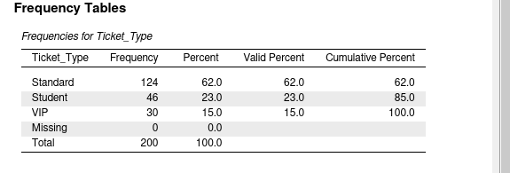
Descriptives → Descriptive Statistics
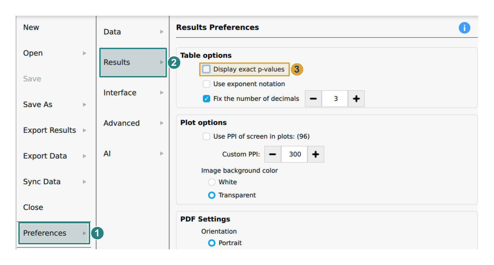
If p shows as 4.795×10⁻¹:
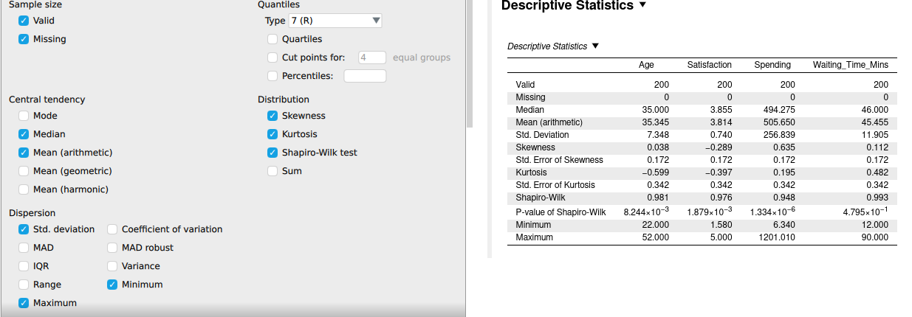
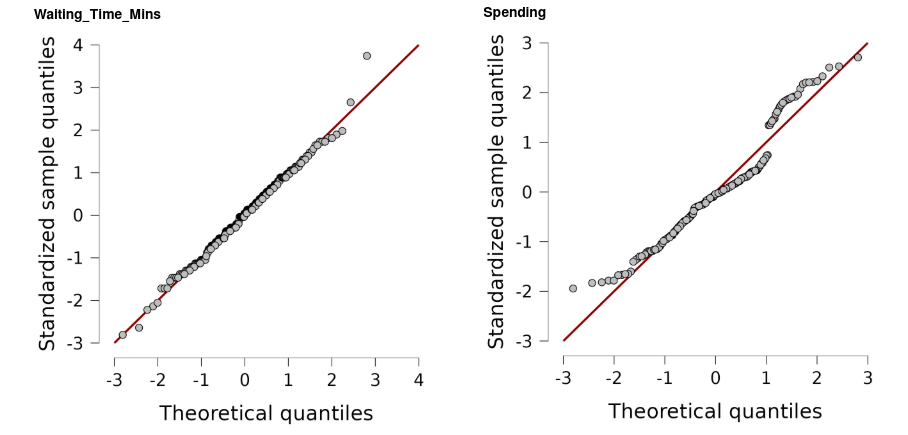
Three checks, read together
| Check | Close to normal if |
|---|---|
| Shapiro-Wilk | p above .05 |
| Histogram | One peak, roughly symmetric |
| Q-Q plot | Points on the diagonal; only one or two drift at the ends |
If p is .05 or below, describe the skew and say whether a parametric approach is still reasonable.
The teaching-file sample
The sample contained 200 customers, 56.0% female and 44.0% male. Most held Standard tickets (62.0%), followed by Student (23.0%) and VIP (15.0%). Customers had a mean age of 35.35 years (SD = 7.35) and a mean satisfaction score of 3.81 out of 5 (SD = 0.74). Waiting_Time_Mins (M = 45.46 minutes, SD = 11.91) showed no strong evidence against normality, Shapiro-Wilk W = .99, p = .479, and the histogram and Q-Q plot suggested an approximately normal distribution, with one long wait of 90 minutes. In business terms, the typical customer is in their mid-thirties, holds a Standard ticket, is fairly satisfied and waits about 45 minutes.
Ask: is each person in one group, or measured twice?
Group_AB, each customer in A or BMain question
Do two independent groups have different population means on a scale variable?
| Gender | n | Mean satisfaction | SD |
|---|---|---|---|
| Female | 112 | 3.87 | 0.75 |
| Male | 88 | 3.74 | 0.72 |
Interpreting the result
| If | Decision | Write |
|---|---|---|
| p below .05 | Reject H₀ | There is evidence that mean satisfaction differs between female and male customers |
| p .05 or above | Retain H₀ | There is no evidence that mean satisfaction differs between female and male customers |
Five random samples of 30 customers, all from the same 200, give five different means:
| Sample | 1 | 2 | 3 | 4 | 5 |
|---|---|---|---|---|---|
| Mean satisfaction | 3.80 | 3.69 | 3.92 | 4.08 | 3.62 |
The p-value shows how likely a difference at least this large would be if H₀ were true.
| p-value | Evidence against H₀ | Decision |
|---|---|---|
| Below .001 | Very strong | Reject H₀ |
| Below .01 | Strong | Reject H₀ |
| Below .05 | Moderate | Reject H₀ |
| .05 or above | Insufficient | Retain H₀ |
A smoke alarm tests H₀: there is no fire.
| Assumption | Check | Met if | If not |
|---|---|---|---|
| Independence | Each customer in one group only | Yes, by design | Paired t-test |
| Normality | Cases per group | 30 or more per group | Check each group’s histogram |
| Equal variances | Levene’s p | Above .05: Student row | .05 or below: Welch row |
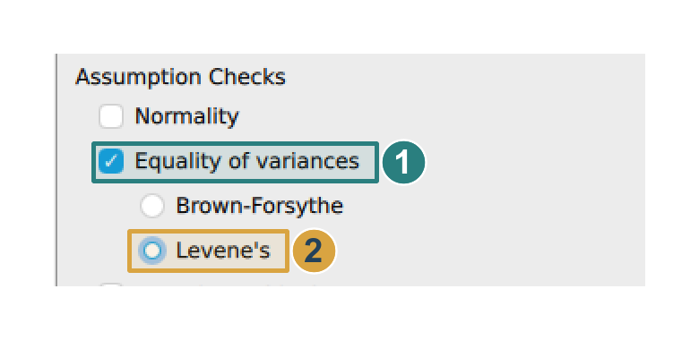
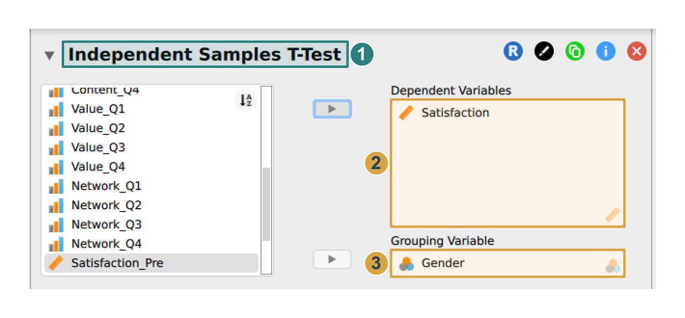
Satisfaction into Dependent VariablesGender into Grouping Variable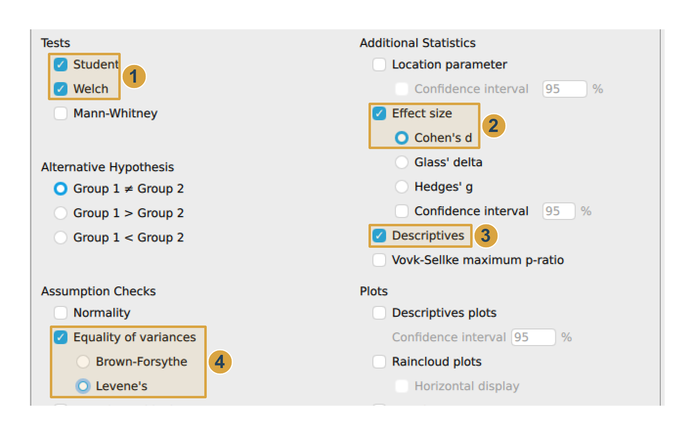
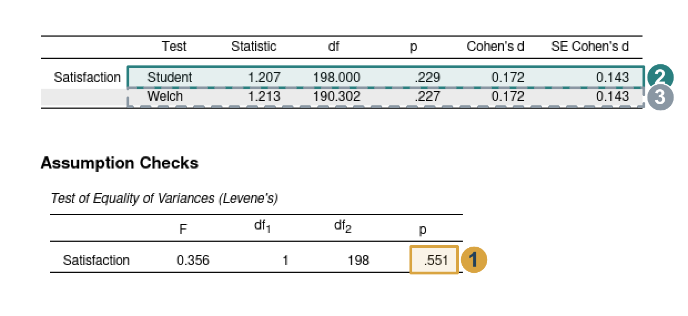
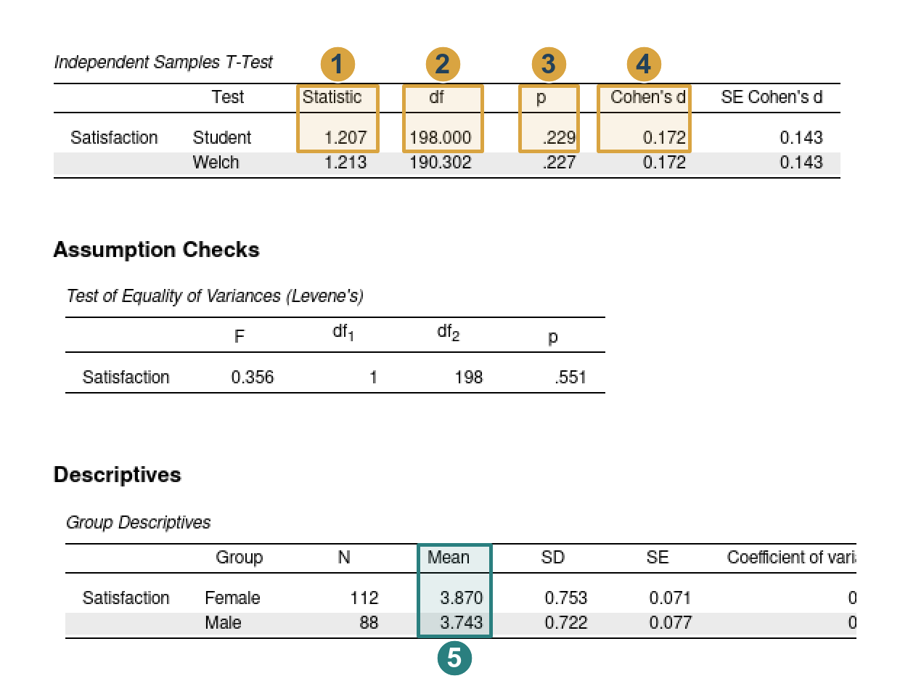
The decision
p = .229 is above .05, so we retain H₀. There is no evidence that mean satisfaction differs between female and male customers, t(198) = 1.21, p = .229.
Cohen’s d expresses the gap between two means in standard deviation units.
| Size of d | Interpretation |
|---|---|
| About 0.20 | Small |
| About 0.50 | Medium |
| About 0.80 | Large |
An independent samples t-test was conducted to compare [outcome] between [group 1] and [group 2]. Levene’s test indicated [equal / unequal] variances, F(1, [df]) = [x.xx], p = [.xxx]. [Group 1] (M = [x.xx], SD = [x.xx]) [differed / did not differ significantly] from [group 2] (M = [x.xx], SD = [x.xx]), t([df]) = [x.xx], p = [.xxx], d = [x.xx].
Satisfaction by gender
An independent samples t-test was conducted to compare satisfaction between female and male customers. Levene’s test indicated equal variances, F(1, 198) = 0.36, p = .551. Female customers (M = 3.87, SD = 0.75) did not differ significantly from male customers (M = 3.74, SD = 0.72), t(198) = 1.21, p = .229, d = 0.17. In business terms, there is no evidence that satisfaction differs between female and male customers, so one service approach can serve both.
Levene’s p = .050. Student row: t(98) = 2.10, p = .038. Welch row: t(91.4) = 2.05, p = .043.
Ten minutes.
Main question
Do two scale variables move together, and how strongly?
r runs from −1 to +1. The brief uses this guide:
| Size of r | Interpretation |
|---|---|
| About 0.10 | Weak |
| About 0.30 | Moderate |
| 0.50 or above | Strong |
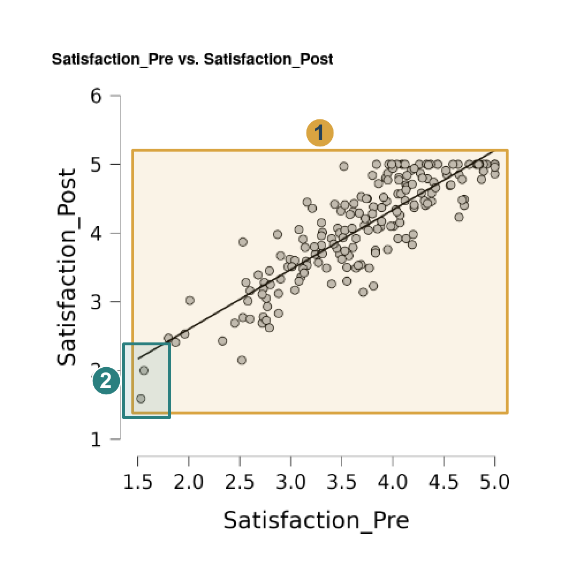
Interpreting the result
| If | Decision | Write |
|---|---|---|
| p below .05 | Reject H₀ | There is evidence of a relationship; give its direction and strength from r |
| p .05 or above | Retain H₀ | There is no evidence of a linear relationship between the two |
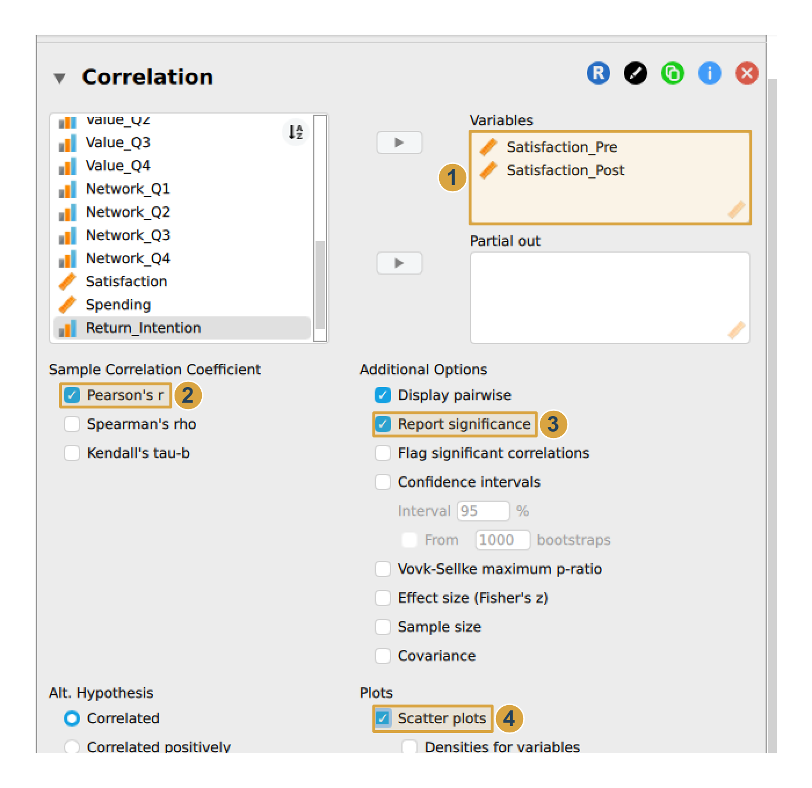
Regression → Classical → Correlation
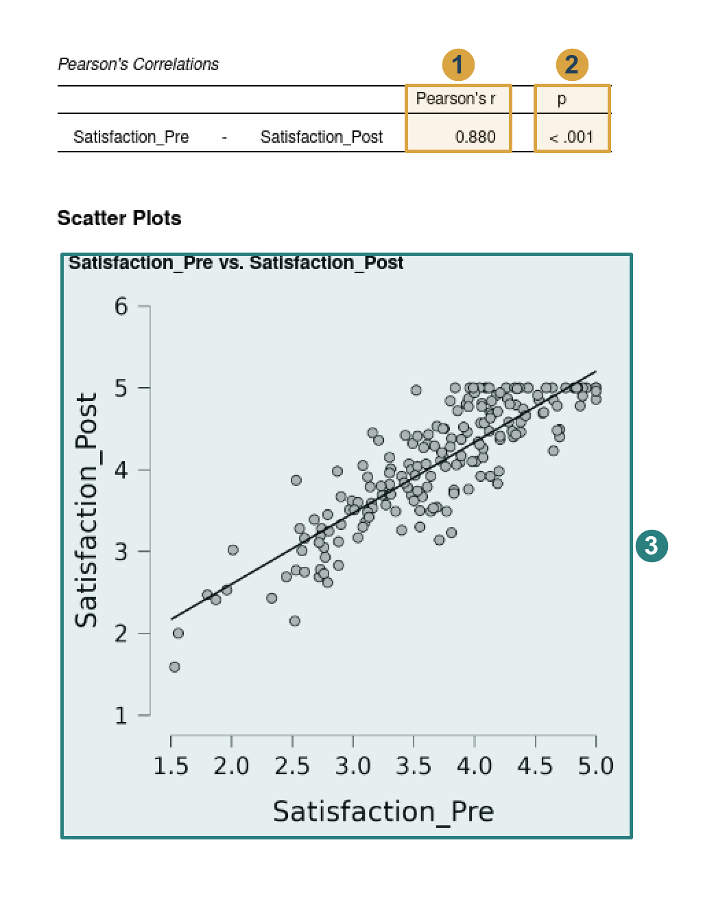
The decision
p < .001 is below .05, so we reject H₀. There is evidence of a strong, positive relationship between pre-event and post-event satisfaction, r(198) = .88, p < .001.
R² is r multiplied by itself, read as a percentage of shared variation.
| r | R² | Shared variation |
|---|---|---|
| .88 | .77 | About 77% |
| .50 | .25 | 25% |
| .06 | .004 | Less than 1% |
A strong r can reflect:
In your assignment, Section C, you must state this in your own words.
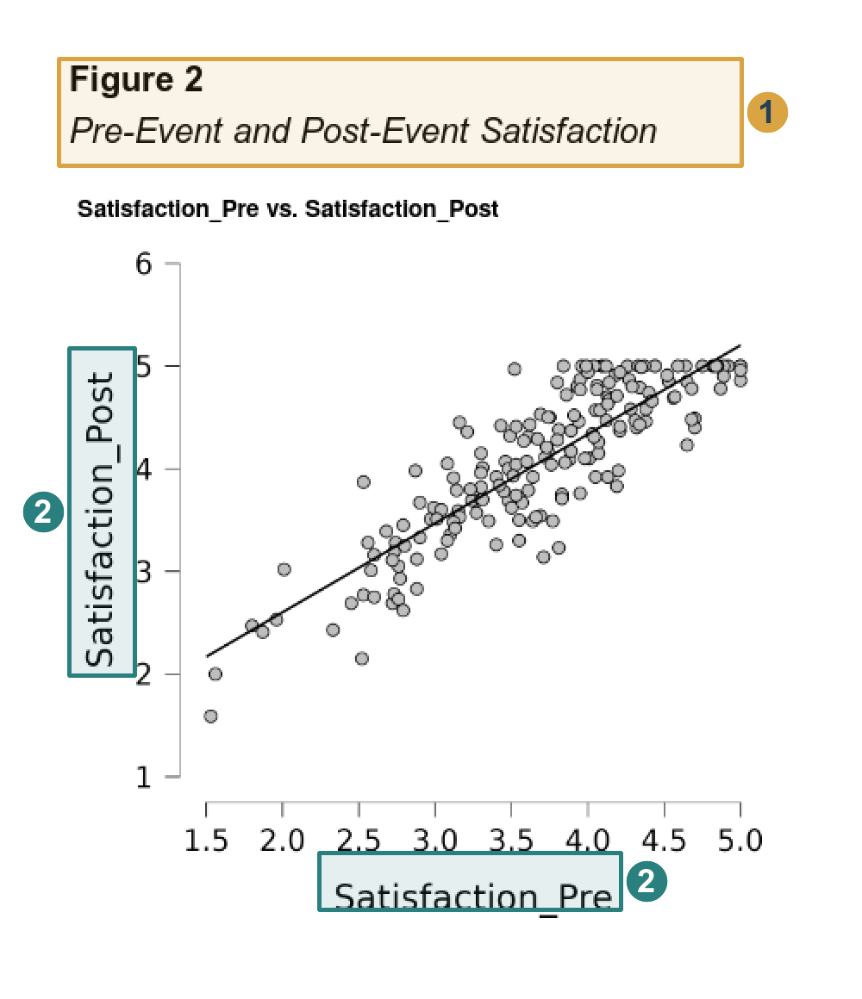
Pre-event and post-event satisfaction
The two were positively related, r(198) = .88, p < .001, a strong relationship, with R² = .77: about 77% of the variation was shared. This suggests that first impressions persist through the event, although the correlation does not establish that one rating caused the other.
Open the Five Forces Analyser in a new tab This tool scores each force 1 to 5. The data file scores 1 to 10.
Week6_Porter_Scenario_Data.csv scores 40 industry scenarios on each force, from 1 to 10.
| Score | Pressure |
|---|---|
| 1 to 3 | Low |
| 4 to 6 | Medium |
| 7 to 10 | High |
Mean_Force_Score averages the five: lower means more attractive| Scenario | Rivalry | Entrants | Suppliers | Buyers | Substitutes | Mean |
|---|---|---|---|---|---|---|
| 26, Financial services | 3 | 2 | 2 | 3 | 3 | 2.6 |
| 3, Tourism | 3 | 4 | 7 | 7 | 8 | 5.8 |
| Strategy | Typical force pattern |
|---|---|
| Invest and grow | Low pressure across the forces |
| Selective investment | Mixed pressure |
| Differentiation | Strong buyer or substitute pressure |
| Cost leadership | Strong price pressure from rivals or buyers |
| Harvest or exit | High pressure across the forces |
Evidence, framework, action
Satisfaction before the event was strongly related to satisfaction after it, r = .88, so customers who start the event dissatisfied tend to finish it dissatisfied. Through Porter’s Five Forces, buyer power in the events market is high: customers compare packages online and switch organisers at little cost, so a dissatisfied customer can easily book elsewhere next time. We recommend monitoring pre-event satisfaction at the next three events and following up every low early rating before the event day. The correlation does not show that better pre-event communication would raise later satisfaction, so a trial at one event would test that first.
The four sections
Deadline: Tuesday 24 November, one PDF. Report clinic: Saturday 21 November.